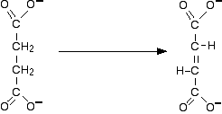
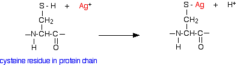

|
ENZYME INHIBITORS This page looks at the effect of inhibitors on reactions involving enzymes. This is the third and final page talking about how enzymes function as catalysts. Please remember that this series of pages is written for 16 - 18 year old chemistry students. If you want something more advanced, you are looking in the wrong place. | ||
|
Note: This page assumes that you have already read the page about how proteins function as enzymes. If you have come straight to this page via a search engine, you really ought to go back and read that page first. In fact, unless you already have a good knowledge of protein structure, you may have to go back further still to a page about the structure of proteins. | ||
|
Competitive and non-competitive inhibition Competitive inhibitors This is the most straightforward and obvious form of enzyme inhibition - and the name tells you exactly what happens. The inhibitor has a similar shape to the usual substrate for the enzyme, and competes with it for the active site. However, once it is attached to the active site, nothing happens to it. It doesn't react - essentially, it just gets in the way. Remember the general equation for an enzyme reacting with a substrate? The equivalent equation for a competitive inhibitor looks like this:
The complex doesn't react any further to form products - but its formation is still reversible. It breaks up again to form the enzyme and the inhibitor molecule. That means that if you increase the concentration of the substrate, the substrate can out-compete the inhibitor, and so the normal reaction can take place at a reasonable rate. A simple example of this involves malonate ions inhibiting the enzyme succinate dehydrogenase. This enzyme catalyses the conversion of succinate ions to fumarate ions. The modern names are:
The conversion that succinate dehydrogenase carries out is:  The reaction is inhibited by malonate ions which have a very similar shape to succinate ions.
The similar shape lets the malonate ions bind to the active site, but the lack of the CH2-CH2 bond in the centre of the ion stops any further reaction taking place. The malonate ions therefore block the active site - but remember that this is reversible. The malonate ions will break away and free up the enzyme again. The malonate ions are in competition for the site - they aren't destroying it. If the succinate ions have a greater concentration than the malonate ions, by chance they will get access to the site more often than the malonate ions. That means that you can overcome the effect of a competitive inhibitor by increasing the concentration of the substrate. | ||
|
Note: Some biochemists are very sloppy about the use of chemical names! If you read about this reaction in other places, you may find the reaction quoted as converting succinic acid into fumaric acid. Some sources even seem to imply that the words "succinate" and "succinic acid" mean the same thing. That's unacceptable from a chemistry point of view! As far as I have been able to discover, the correct version is the conversion from succinate ions to fumarate ions (as above). At a typical cell pH of around pH 7, these substances will be present mainly as their ions, not as the unionised acids. And scientific papers from people working on the mechanisms for this conversion all talk about the ions, not the acids. | ||
|
Non-competitive inhibitors A non-competitive inhibitor doesn't attach itself to the active site, but attaches somewhere else on the enzyme. By attaching somewhere else it affects the structure of the enzyme and so the way the enzyme works. Because there isn't any competition involved between the inhibitor and the substrate, increasing the substrate concentration won't help. If you look at various biochemistry sites on the web, you will find two explanations for this. We'll look at the simple, fairly obvious one in some detail in a minute. I want to have a brief word about the other one first. "Pure" non-competitive inhibitors This explanation says that the inhibitor doesn't affect the ability of the substrate to bond with the active site, but stops it reacting once it is there. I found a couple of biochemistry sites which said that inhibitors working like this (which they describe as pure non-competitive inhibitors) are virtually unknown. As a non-biochemist, I don't know what the truth is about this - if you want to find out, you will probably have to do a biochemistry degree! Other non-competitive inhibitors The straightforward explanation (which would seem to apply to most enzymes) is that reaction with the inhibitor causes the shape of the active site to change. Remember that non-competitive inhibitors aren't attaching directly to the active site, but elsewhere on the enzyme. The inhibitor attachs to a side group in the protein chain, and affects the way the protein folds into its tertiary structure. That in turn changes the shape of the active site. If the shape of the active site changes, then the substrate can't attach to it any more. Some non-competitive inhibitors attach irreversibly to the enzyme, and therefore stop it working permanently. Others attach reversibly. A relatively uncomplicated example of non-competitive inhibitors in a reasonably familiar situation is: Heavy metal poisoning You are probably aware that compounds containing heavy metals such as lead, mercury, copper or silver are poisonous. This is because ions of these metals are non-competitive inhibitors for several enzymes. I'm going to take silver as a simple example. Silver ions react with -SH groups in the side groups of cysteine residues in the protein chain:  There isn't enough electronegativity difference between silver and sulphur for a full ionic bond and so the bond can be considered as covalent. If the cysteine residue is somewhere on the protein chain which affects the way it folds into its tertiary structure, then altering this group could have an effect on the shape of the active site, and so stop the enzyme from working. The 2+ ions from, for example, mercury, copper or lead can behave similarly - also attaching themselves to the sulphur in place of the hydrogen. | ||
|
Note: I have come across a couple of references to the ability of heavy metal ions to break sulphur-sulphur bridges, which would have a major effect on the folding of the protein chain. A student suggested this page, which has a note about mercury poisoning (see item 4 on the page). This suggests that mercury breaks sulphur-sulphur bridges by attaching to both of the sulphur atoms, distorting the bridge, and so the folding of the protein chains. I have no reason to suppose that this description is wrong, but I am a bit wary of relying on a single source. The reason for choosing silver as my example rather than the more obvious mercury or lead is that it forms a 1+ ion. For 2+ ions, you would have to worry about what got attached to the metal as well as the sulphur - or whether it retained a single positive charge. All the biochemistry sources I've been able to find skip over this problem - as a chemistry teacher looking for chemical accuracy, I'm not prepared to do that! | ||
© Jim Clark 2007 (last modified May 2016) |
||